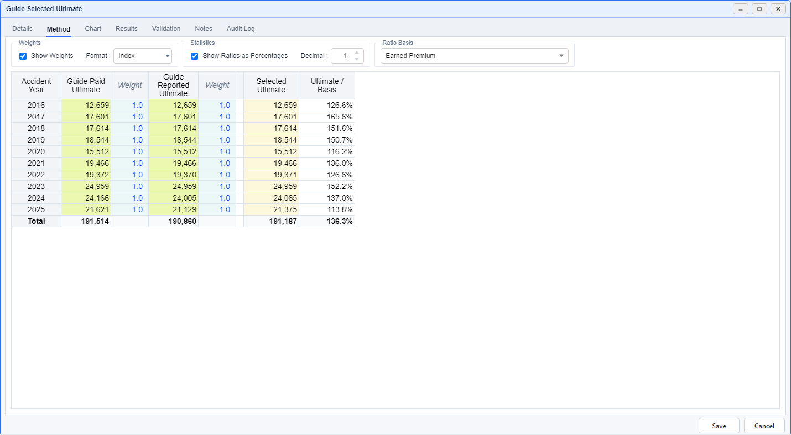

Result Selection
Choose a final ultimate across methods
Compare source estimates by origin, apply weights, and review the selected output and its supporting ratios.
Open or Create a Selection
- On the demo Project Page, select Commercial Auto → All States → CH02 → Comprehensive.
- Find the finished Guide Selected Ultimate vector and double-click its row. Its Method Type is Result Selection.
- To start a new one, right-click a suitable vector row whose Method Type is None, then choose Add → Result Selection.
- On Details, use a distinct practice Name, such as My Selected Ultimate, choose the intended Output Type, and check Origin Length. Use 12 for this annual review.

Choose Sources and a Ratio Basis
- Open Method and inspect the source columns. The saved example uses Guide Paid Ultimate and Guide Reported Ultimate, with weights of 1 and 1 for each origin.
- Right-click a source header to use View/Edit, Add, or Delete. Added sources must belong to the same segment and match the output category.
- On Details, use + Add datasets under Ratio Basis and select Earned Premium.
- Return to Method and select Earned Premium in the active Ratio Basis control to review the ultimate-to-premium ratio.
Adjust Weights by Origin
- Keep Show Weights enabled and choose Index as the weight format.
- Enter a positive weight to include a source or 0 to exclude it for that origin. Double-clicking a source-value cell toggles its paired weight between 0 and 1.
- Check Selected Ultimate after each change. It is the weighted mean of available source values with positive weights; a row with no positive source weights remains blank.
- Choose Effective % to inspect each source's share of the total weight. These percentages are a view of the index weights.
If you enter a custom Selected Ultimate, its red text distinguishes the override. Select that override and press Delete to return the row to the weighted calculation.
Review and Save the Output
- Open Chart to compare the sources with the Selected Ultimate line, then inspect the read-only Results table.
- Write the selection rationale in Notes, including any origin-specific override.
- Choose Save and read the completion message and any warnings about inputs that still need review.
- Return to the Project Page to reopen the method or choose Show as vector for its output.